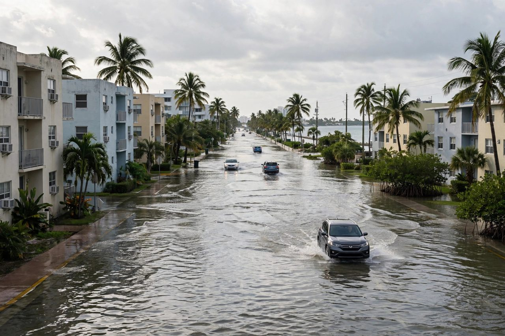

Miami, Floride : les marees royales inondent des rues de Miami-Dade et Broward sous de fortes pluies
Un avis d'inondation cotiere couvre les comtes de Miami-Dade, Broward et Palm Beach au moins jusqu'a samedi. Les previsions disent que la pluie au moment de la maree haute pourrait faire monter l'eau davantage jusqu'au debut de la semaine prochaine, avec la maree la plus haute prevue a Miami le 27 octobre.

Points clés
- Les marees royales ont pousse l'eau de mer dans les rues des comtes de Miami-Dade et de Broward vendredi, et les meteorologues disent que l'eau pourrait monter davantage au cours des quatre…
- WSVN a signale vendredi des inondations de maree royale dans des rues de Miami-Dade et de Broward.
- Maree royale est un terme non scientifique pour une maree exceptionnellement haute, selon la NOAA.
Les marees royales ont pousse l'eau de mer dans les rues des comtes de Miami-Dade et de Broward vendredi, et les meteorologues disent que l'eau pourrait monter davantage au cours des quatre prochains jours, quand de fortes pluies, des vents forts venus de la mer et les marees les plus hautes de l'annee arriveront ensemble.
WSVN a signale vendredi des inondations de maree royale dans des rues de Miami-Dade et de Broward. Le bureau du National Weather Service a Miami a un avis d'inondation cotiere en vigueur pour la cote est du sud de la Floride, avec un risque d'inondation cotiere moderee dans les comtes de Miami-Dade, Broward et Palm Beach au moins jusqu'a samedi, selon USA Today. Le South Florida Water Management District a dit dans ses previsions du 19 octobre, qui vont jusqu'au 27 octobre, que les niveaux de maree sur la cote est pourraient passer le seuil d'inondation mineure dans les prochains jours et approcher le seuil d'inondation majeure en fin de periode. Dans les Keys, l'eau etait deja proche du seuil mineur quand ces previsions ont ete publiees.
Pourquoi l'eau monte maintenant
Maree royale est un terme non scientifique pour une maree exceptionnellement haute, selon la NOAA. Les marees les plus hautes viennent en general pres d'une nouvelle lune ou d'une pleine lune, et quand la lune est a son perigee, son point le plus proche de la Terre. Le Palm Beach Post a rapporte que la pleine lune d'octobre atteint son maximum tot le lundi 26 octobre et que la lune est a deux jours du perigee, ce qui renforce l'attraction sur l'eau. Brian McNoldy, chercheur principal a la Rosenstiel School de l'Universite de Miami, a dit au Post que la maree la plus haute prevue a Virginia Key, a Miami, est attendue le 27 octobre a 10 h 30. McNoldy a aussi dit que le niveau de la mer dans la region de Miami a monte jusqu'a 6,5 pouces depuis la periode de reference 1983 a 2001 que la NOAA utilise pour mesurer les marees.
La pluie est la deuxieme partie du probleme. Le National Weather Service a Miami a mis la probabilite de pluie a 70 pour cent samedi et 80 pour cent dimanche, a rapporte le Post, avec 3 a 6 pouces possibles de vendredi a lundi dans les zones cotieres de Palm Beach, Broward et Miami-Dade, et plus de 10 pouces dans le pire des cas si les averses restent bloquees sur un secteur. Le meteorologue Chuck Caracozza a dit que 2 a 4 pouces rapides en une heure sont possibles si de fortes averses se repetent sur les memes rues. Des rafales de 30 a 40 mph, avec des vents soutenus jusqu'a 26 mph dimanche, pousseront les vagues dans les anses et laisseront moins de place a l'eau de pluie pour s'ecouler. Dan Pydynowski, meteorologue principal d'AccuWeather, a dit au Post que le pire de cette configuration sera probablement samedi, dimanche et lundi.
Les villes mettent barrages et pompes au travail
A Hollywood, les equipes ont place des sacs de sable devant le magasin Ocean Blu sur le Broadwalk, un commerce qui avait recu environ un pied d'eau lors d'une maree royale plus petite le mois dernier, a rapporte le Miami Focal le 23 octobre. La ville a installe des barrieres Tiger Dam supplementaires le long de la plage, verifie ses pompes de drainage et deploye des pompes auxiliaires, a dit la porte-parole Joann Hussey. Hollywood pourrait aussi ouvrir les garages de stationnement de la plage pour que les residents eloignent leurs voitures de l'eau salee. A Fort Lauderdale, la responsable de la resilience Nancy Gassman a averti que les marees du debut de la semaine prochaine devraient etre plus hautes que celles enregistrees avant, avec un pic jusqu'a mardi et mercredi, et elle a demande aux personnes des zones vulnerables de se preparer maintenant.
La ville de Miami conseille de ne pas conduire dans l'eau d'inondation, qui peut cacher des dechets, des polluants et d'autres dangers, et de laver la peau au savon et a l'eau chaude apres un contact avec cette eau. La ville dit aussi de ne pas garer les vehicules dans les zones basses, de verifier et nettoyer tout vehicule touche par l'eau, et d'utiliser des sacs de sable ou une autre protection sur les proprietes basses. Cet article sera mis a jour sur place si le National Weather Service prolonge l'avis ou le transforme en avertissement, ou si les villes annoncent des fermetures de rues ou l'ouverture de garages pour les marees de pointe du debut de la semaine prochaine.
Chronologie
- Oct 19, 2026Les previsions du South Florida Water Management District, jusqu'au 27 octobre, disent que les niveaux de maree sur la cote est pourraient passer le seuil d'inondation mineure et approcher le seuil majeur en fin de periode.
- Oct 22, 2026Le bureau du National Weather Service a Miami a un avis d'inondation cotiere en vigueur, avec un risque d'inondation moderee a Miami-Dade, Broward et Palm Beach au moins jusqu'a samedi.
- Oct 23, 2026WSVN signale des inondations de maree royale dans des rues de Miami-Dade et Broward. Hollywood a sacs de sable, barrieres supplementaires et pompes en place, et Fort Lauderdale avertit que les marees du debut de la semaine prochaine pourraient passer les records precedents.
- Oct 27, 2026La maree la plus haute prevue a Virginia Key, a Miami, est attendue le 27 octobre a 10 h 30, selon Brian McNoldy, chercheur a l'Universite de Miami.
Sources
- WSVN 7News: King tide causes flooding across Miami-Dade and Broward County streets
- USA Today: Flood advisory in effect for South Florida, king tides to return
- Palm Beach Post: A perfect-storm type of soaked weekend looms for Florida's east coast
- Miami Focal: Hollywood deploys barriers and pumps as king tides threaten Broward's coast